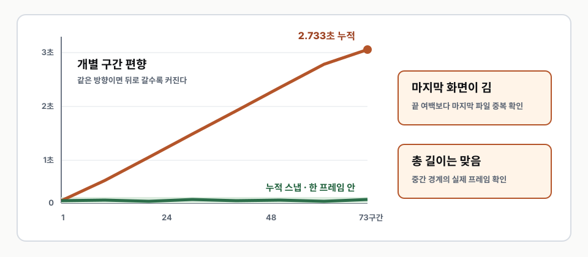
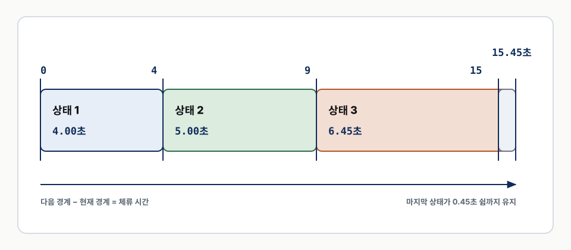
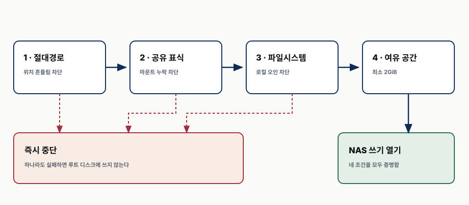
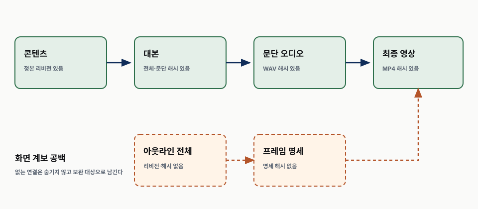

어떤 시간을 믿을 것인가?
AI 콘텐츠 파이프라인
강의 영상을 조립하고 검증하기
실측 시간과 누적 프레임 격자로 끝까지 어긋나지 않게 만들기
AI·ML·Quant 스터디 · 2026-08-23
시작이 맞아도 끝은 어긋날 수 있다
오디오는 연속 시간이고 영상은 프레임 격자다
작은 반올림도 같은 방향으로 반복되면 누적된다
이 차시는 네 질문을 닫는다
프레임 격자에는 어떻게 맞출 것인가?
정지 화면은 어떻게 이어 붙일 것인가?
최종 파일은 무엇으로 검증할 것인가?
운영까지 세 관문을 더 닫는다
NAS가 빠진 쓰기를 어떻게 막는가?
어떤 해시가 있고 무엇이 비어 있는가?
비공개 승인부터 공개 확인까지 어떻게 잇는가?
네 흐름이 한 배포를 만든다
측정
WAV를 다시 잰다
계획
문장 경계로 체류를 만든다
스냅
누적 시각을 프레임에 맞춘다
조립
세그먼트를 같은 규격으로 잇는다
첫째
작은 오차가 뒤에서 커진다
01한 프레임보다 작은 오차도 쌓인다
영상 격자
한 프레임은 약 0.033초
반복 사례
같은 방향의 반올림
재현된 누적 차이
시청자가 느끼는 규모
증상보다 누적합을 먼저 본다

이미지 duration은 세 번 어긋났다
| 방식 | 관측 결과 | 판단 |
|---|---|---|
| 마지막 되풀이 없음 | 14.49초 부족 | 마지막 지속 시간 손실 |
| 마지막 되풀이 | 20.1초 초과 | 마지막 화면 중복 |
| 되풀이와 길이 제한 | 엉뚱한 지점에서 잘림 | 재타이밍과 제한 충돌 |
해결 단위를 바꾼다
BEFORE
이미지 목록의 duration
목록 해석에 길이를 맡긴다
AFTER
길이를 가진 영상 세그먼트
파일 자체가 체류 시간을 보존한다
최종 길이는 경계의 증거가 아니다
| 확인값 | 알 수 있는 것 | 알 수 없는 것 |
|---|---|---|
| 전체 길이 | 시작과 끝의 합 | 중간 전환의 위치 |
| shortest 종료 | 긴 꼬리 제거 | 화면과 말의 동기 |
| 경계 프레임 | 실제 전환 픽셀 | 시청 경험 전체 |
둘째
타임라인은 오디오 실측에서 시작한다
02추정 대신 파일을 다시 잰다
ESTIMATE
글자 수와 평균 속도
- 전체 작업 시간 추정
- 개별 쉼을 모름
MEASURE
WAV와 ffprobe
- 문단의 실제 끝
- 조립 경계로 사용
세 입력이 모두 있어야 한다
| 입력 | 필요한 값 | 실패 조건 |
|---|---|---|
| 생성 원장 | ID와 검증 상태 | 미검증 문단 |
| 정렬 원장 | 문장 시작 시각 | 비단조 또는 범위 밖 |
| 프레임 명세 | 단계 수와 PNG | 누락된 단계 |
단계 체류는 경계의 차이다

15초 문단과 0.45초 쉼의 계산 예
마지막 화면이 쉼까지 붙잡는다
시작
첫 화면은 0초
전환
문장 시작에 다음 상태
문단 끝
마지막 발화까지 유지
쉼
0.45초 뒤 다음 장
잘못된 시간은 조립 전에 막는다
| 검사 | 통과 조건 |
|---|---|
| 단계 수 | 한 개 이상 |
| 시작 시각 | 앞 값보다 큼 |
| 마지막 시작 | 오디오 길이보다 작음 |
| 파일 | 모든 WAV와 PNG 존재 |
| 문단 상태 | 모두 검증 통과 |
2강 산출물이 실제 입력 규모를 보여 준다
검증된 WAV
슬라이드와 같은 ID
드러내기 상태
기록된 전체 상태 수
문단 오디오
파일 실측 합
최종 영상
쉼과 끝 여백 포함
셋째
누적 시각을 프레임에 맞춘다
03반올림 단위가 결과를 바꾼다
| 방법 | 계산 | 결과 |
|---|---|---|
| 개별 반올림 | 구간마다 초를 프레임으로 | 오차 방향이 반복될 수 있음 |
| 누적 스냅 | 누적 시각을 프레임으로 | 다음 구간이 차이를 흡수 |
| 최종 검사 | 마지막 누적 경계 비교 | 총 오차 한 프레임 미만 |
다섯 변환으로 격자에 올린다
체류
연속 초
누적
첫 화면부터 합
프레임
누적 초 곱하기 30
반올림
가장 가까운 정수
차이를 다시 체류 시간으로 되돌린다
인접 누적 프레임 번호를 뺀다
그 차이를 30으로 나누면 구간별 체류가 된다
30프레임 격자에서 직접 계산한다

총오차는 반복 횟수와 함께 자라지 않는다
PASS
누적 스냅
- 모든 체류가 정수 프레임
- 총 차이는 한 프레임 미만
FAIL
개별 반올림
- 작은 편향이 반복
- 뒤쪽 화면이 계속 밀림
넷째
세그먼트가 길이를 스스로 가진다
04모든 세그먼트 규격을 같게 한다

정지 화면 하나가 영상 조각 하나가 된다
PNG
최종 크기 화면
체류
스냅된 초
인코딩
같은 설정
MP4
길이를 가진 세그먼트
concat 목록은 경로만 가진다
| 목록 | 허용 | 금지 |
|---|---|---|
| 영상 | 세그먼트 한 줄 한 파일 | 이미지 duration |
| 결합 | concat demuxer | 복잡한 필터 |
| 코덱 | copy | 세그먼트별 재인코딩 |
오디오는 문단과 무음을 번갈아 잇는다
문단 WAV
검증된 발화
0.45초
장 사이 무음
다음 WAV
다음 슬라이드
1.20초
마지막 화면 여백
메모리 사고는 실행 경계로 막는다
GUARD
사용자 cgroup
- 메모리 8GB
- 스왑 0
AVOID
무거운 필터 경로
- trim과 atrim 금지
- 세그먼트로 실패 범위 축소
조립 순서를 파일로 추적한다
| 단계 | 산출물 |
|---|---|
| 무음 생성 | pause.wav와 tail.wav |
| 오디오 결합 | narration.wav |
| 화면 인코딩 | 번호별 segment.mp4 |
| 영상 결합 | slides.mp4 |
| 최종 mux | 강의 MP4와 timeline.json |
다섯째
최종 MP4가 다시 시험대에 오른다
05네 길이를 함께 남긴다
스냅 전 체류 합
계산 기준
문단과 무음 합본
실제 소리
세그먼트 합본
실제 화면
최종 MP4
공개 후보
스트림과 컨테이너를 다시 조사한다

경계 직후 픽셀을 다시 뽑는다
타임라인
기대 전환 시각
추출
최종 MP4 프레임
비교
전체 후보와 거리
판정
기대 상태가 최근접
2강 원장이 닫는 것은 길이까지다
| 원장 값 | 결과 | 말할 수 있는 것 |
|---|---|---|
| 화면 프레임 | 138개 | 후보 상태 수 |
| 예상 오디오 합본 | 746.38초 | 오디오와 쉼의 산술 |
| 최종 영상 | 746.367초 | 기록된 파일 길이 |
| 단순 차이 | 0.013초 | 총 길이 비교 |
| 경계 통과 수 | 기록 없음 | 일치를 단정하지 않음 |
자동 검사 뒤에는 실제 재생이 남는다
글자
넘침과 잘림을 본다
전환
현재 강조가 말과 맞는지 본다
쉼
장 사이 호흡을 듣는다
형제 장
같은 레이아웃을 함께 본다
여섯째
아카이브 쓰기를 먼저 지킨다
06경로가 있어도 NAS는 없을 수 있다
DANGER
마운트 지점만 남음
쓰면 루트 디스크를 채운다
SAFE
공유 안의 표식 확인
마운트 실체를 먼저 증명한다
네 가드가 쓰기 전에 멈춘다

재생성 가능 여부로 보관을 나눈다
ARCHIVE
보관
- 검증 WAV와 원장
- 최종 MP4
SCRATCH
재생성
- 프레임 PNG
- 세그먼트 중간물
일곱째
해시 연결의 범위를 정확히 말한다
07현재 원장은 다섯 고리를 잇는다
콘텐츠
정본 리비전
대본
전체와 문단 해시
오디오
문단 파일 해시
영상
최종 MP4 해시
화면 쪽 해시 공백은 아직 남아 있다

비공개 승인 뒤에 공개한다
파일 해시
최종 MP4 고정
비공개 업로드
소유자 원장 기록
두 승인
자산과 메타데이터
공개
2강 다음 순서
익명 확인과 롤백으로 배포를 닫는다

정리